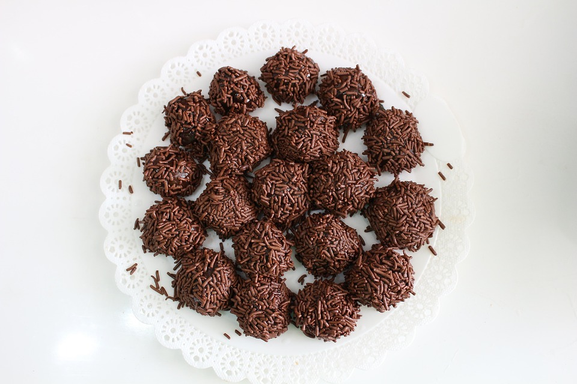

Brigadeiro
Brigadeiro are a classic Brazilian treat similar to chocolate truffles that are extremely scrumptious and delicious. This sweet is loved here in Brazil. Try it!

Ingredients
- 1 (14 ounce) can sweetened condensed milk
- 3 tablespoons unsweetened cocoa
- 1 tablespoon butter
- chocolate sprinkles for rolling
Directions
- Gather all ingredients.
- Combine condensed milk, cocoa, and butter in a medium saucepan over medium heat. Cook and stir until thickened, about 10 minutes.
- Transfer mixture into a shallow bowl and allow to cool.
- Pinch off some of the dough and roll into a small ball; place on a plate. Repeat with remaining mixture, then roll each brigadeiro in chocolate sprinkles.
- Enjoy or chill brigadeiros until ready to serve.
Notes
You can also make the chocolate mixture in the microwave; just remember to stir every minute.